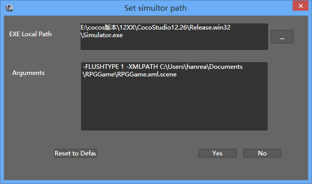

Simulator Selected
Intro

In cocostudio 1.2.0.0 version，you can select yourself simulator.
Function
EXE Local Path
Choose executable file path of the simulator. Default is cocostudio own simulator.
The The source code of CocoStudio's simulator has been published to the github.com website. You can modify the program to realize youself simulator, add and modify its required function.
Arguments
Passed to the parameters of the simulator.This parameter contains the path of the current project information, used to guide the simulator to load the scene data.
This parameter is not need to modify the default.But if you custom your own simulator, you can according to your emulator required to fill in the parameter.
Reset To Default
Rest "EXE Local Path" and "Arguments" property to system default.